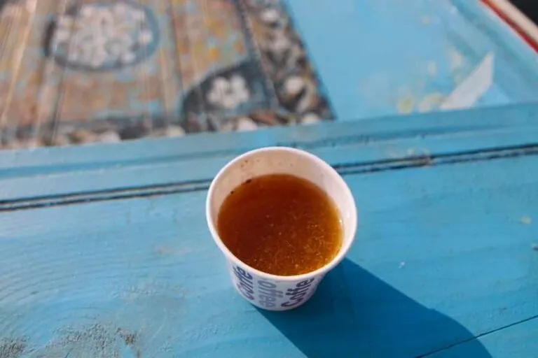

Kahwa

Description
Kahwa is a fragrant, mild green tea prepared using whole spices, saffron and almonds. In Oman, kahwa is consumed on a regular basis and is always offered to visitors along with dates or other dried fruits. The flavor is weak and extremely sweet (as it is strained with cardamom grains and sugar), and it also has a fragrant smell. Although kahwa is an Arabic coffee, it is also popular in other cuisines, especially in Kashmiri cuisine.
Ingredients
- 4 tsp Kashmiri green tea leaves
- 1/4 tsp saffron strands
- small cinnamon stick
- 2 cardamoms, slightly crushed
- 2 cloves
- 1 tbsp sugar
- a few saffron strands for the garnish
Steps
- Combine the saffron strands and 1 tbsp of warm water in a small bowl, mix well and keep aside.
- Boil 2 cups of water in a saucepan, add the cinnamon stick, cardamom, cloves and sugar, mix well and cook on a medium flame for approx. 5-6 minutes
- Lower the flame, add the Kashmiri green tea leaves, mix well and cook for 2-3 minutes, while stirring occasionaly.
- Strain the tea in a deep bowl using a strainer
- Transfer the mixture into a saucepan, add the saffron-water mixture, mix well and cook on a slow flame for 1 minute, While stirring continously
- Serve with Dates